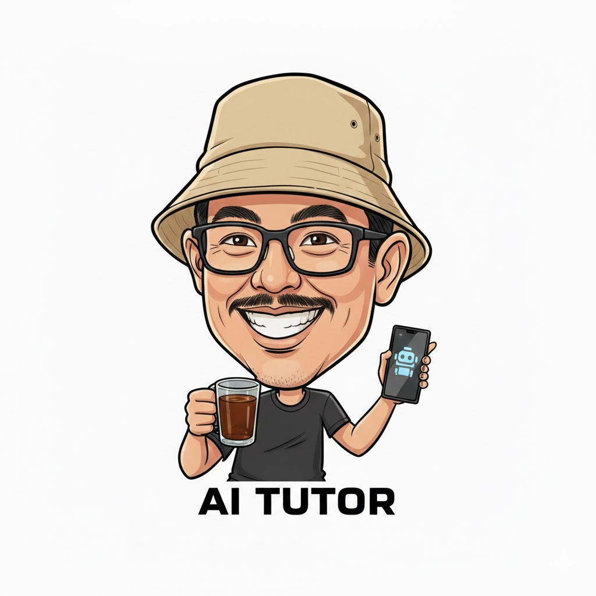

Halo, Saya Pak Agus
Saya akan membantumu menyelesaikan setiap masalah dengan cara berpikir koputasi.
BERPIKIR KOMPUTASI
Definisi & Karakteristik
- Berpikir Komputasional (CT): Metode pemecahan masalah dengan melibatkan teknik yang digunakan software engineer untuk menemukan solusi efisien, efektif, dan optimal agar bisa dijalankan manusia atau mesin.
- Tujuan: Melatih kemampuan berpikir seperti ilmuwan informatika dalam menyusun strategi mengatasi persoalan sehari-hari.
- Karakteristik: Berbasis konsep (bukan sekadar kode), memadukan pemikiran matematis dan teknik, serta bersifat saintifik.
4 Fondasi Berpikir Komputasional
- Abstraksi: Menyaring informasi penting dan mengabaikan detail yang tidak relevan agar fokus pada solusi.
- Algoritma: Menyusun langkah-langkah terurut secara sistematis untuk mencapai tujuan.
- Dekomposisi: Memecah masalah besar/sulit menjadi bagian-bagian kecil agar lebih mudah diselesaikan secara sistematis.
- Pengenalan Pola: Melakukan generalisasi dan mentransfer cara penyelesaian ke persoalan lain yang sejenis.
Algoritma Pencarian & Pengurutan
Pencarian (Searching)
Proses menemukan data dalam sekumpulan objek berdasarkan kriteria tertentu.
- Sequential Search: Mencocokkan data satu per satu secara berurutan dari awal sampai akhir.
- Binary Search: Khusus untuk data terurut; dilakukan dengan membagi data menjadi dua (nilai tengah) dan mengabaikan separuh data yang tidak relevan.
Pengurutan (Sorting)
Mengatur kelompok data mengikuti aturan naik (ascending) atau turun (descending).
- Bubble Sort: Membandingkan data secara berpasangan dan menukarnya jika urutannya salah (seperti gelembung).
- Selection Sort: Memilih nilai terkecil/terbesar dari bagian yang belum urut, lalu menukarnya (swap) ke posisi yang benar.
- Insertion Sort: Menyisipkan (insert) item pada posisi yang tepat di bagian data yang sudah terurut.
Struktur Data
Metode untuk menyusun, mengatur, dan menyimpan data secara efisien.
- Stack (Tumpukan): Menggunakan prinsip LIFO (Last In First Out). Data terakhir masuk adalah yang pertama keluar.
- Operasi: Push (tambah) dan Pop (hapus).
- Contoh: Tumpukan piring.
- Queue (Antrean): Menggunakan prinsip FIFO (First In First Out). Data pertama masuk adalah yang pertama diproses.
- Operasi: Enqueue (tambah) dan Dequeue (hapus).
- Contoh: Antrean mobil di tol atau antrean pasien.
📖 Butuh materi lebih mendalam?
📥 Buka Naskah PDF
Soal 1
Memuat soal...
0